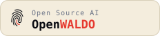

OpenWALDO
OpenWALDOThis is a project anyone can contribute to. Yes, you.
Open source didn’t win because a company built it — it won because everyone did. The corpus grows the same way: incremental and permissionless. If you know git, you already know the workflow.
The clean pool has gaps. Filling one is a named, lasting contribution.
Math & structured reasoning
The biggest gap: the standard math sets fail the license bar. Clean paths exist — synthetic generation with clean-generator models, public-domain texts, CC-licensed Q&A.
Instruction & preference data
Community-collected conversation data is the only unbounded clean source — the OASST model proved it works. Human turns, openly licensed.
Multilingual breadth
The public-domain and CC pool outside English and French is barely tapped: national libraries, government works, Wikipedia editions.
Fresh, permissive code
Permissively licensed repositories ingested directly with per-file SPDX fidelity — freshening a corpus that ages fast.
Newly opened archives
Every institution that flips a collection to genuinely open terms is one fetch-and-ingest away from the index. Help us find them.
Compute & funding
The growth ladder is funding-honest: laptops prove the pipeline, rented nodes build the first useful models, and the foundation rung needs partners. Donated cluster time moves the whole project up a stage.
One ingest, one sign-off, one pull request.
Contributions happen inside a checkout of the index repo, git-style. Start with data you already have: your documentation, product guides, knowledge bases, manuals, published research, industry expertise — anything you can openly license. Plain text, Markdown, JSONL records, HTML, or EPUB; the converter senses each file's format. If your company wants the world's AI models to know your products and your field, this is the mechanism — with provenance instead of hallucination. Your website works too: fetch-site crawls your own docs — politely, robots.txt honored, scoped to the paths you name — into deposits with per-page provenance.
Authorization works the way corporate open source has worked for twenty years: the DCO. The -s on the commit is a named person's attestation — made with their own git identity — that they're authorized to contribute this data under the license declared. Reviewers apply the obvious norm (a sign-off from you@acme.com contributing acme.com content is ordinary; a stranger claiming to speak for Acme invites questions), and companies that can publish a machine-readable grant at /.well-known/openwaldo.txt get it hash-pinned into the record as an optional, domain-grade strengthener — never a requirement. Takedown is first-class if a claim ever proves wrong. The diff plus the URLs in it are the entire contribution.
# 0. install waldo, fork + clone the index $ git clone https://github.com/openwaldo/waldo-index.git && cd waldo-index # 1. point at your lookaside store, once — you host your own bytes; # reads never need credentials, only your uploads do $ waldo lookaside set s3://s3.us-east-2.amazonaws.com/my-bucket/lookaside $ waldo lookaside login # 2. your data, ready at /tmp/raw — docs, guides, articles, Q&A — # as .txt / .md / .jsonl / .html / .epub (format sensed per file) $ ls /tmp/raw guide-1.txt guide-2.txt guide-3.txt guide-4.txt # 3. ingest: declare what it is and where it came from — convert # deterministically, pack, push shards, write the manifest $ waldo index ingest /tmp/raw industry/acme --name acme-docs --license CC-BY-4.0 \ --source "name=acme-docs,origin=Acme Inc product documentation,version=2026-07,url=https://docs.acme.example" ingested 4 docs (8164 tokens) into 1 shard(s): 1 uploaded, 0 already hosted manifest: industry/acme/acme-docs.json next: review the diff, then commit with your DCO sign-off # 4. sign it, push it, open the PR $ git add industry index.json && git commit -s -m "Add Acme product docs" $ git push # → open the pull request; CI re-verifies the whole tree
Hacking on the toolchain itself is the same loop developers already know: one Go binary, a root Makefile where make, make test, and make install always work, and an end-to-end suite that trains real models. Fetchers and converters are the friendliest first contribution — each is a standalone worked example, and the generic Hugging Face fetcher covers most datasets before any new code is needed.
# build, test — the unit suite includes the golden-byte determinism checks $ git clone https://github.com/openwaldo/waldo.git && cd waldo $ make && make test # the end-to-end walkthrough: raw books → ingest → verify → train → chat → # export, plus every guard rail that must refuse $ make test-e2e == RESULTS: 49 passed, 0 failed == # most datasets need no new fetcher — the generic one maps fields, pins the # dataset revision, and normalizes licenses to SPDX $ fetch-hf -dataset HuggingFaceTB/cosmopedia -list 336 data file(s); dataset license: Apache-2.0; revision 0ae6ec63f917
Show your source — and let anyone check it.
If your model trains on indexed data, its bill of materials already proves it — the badge just makes the claim visible. Put it on your model card, your README, or your product page, and link it to the provenance it stands for.

# markdown (model cards, READMEs) [](https://openwaldo.org) <!-- html --> <a href="https://openwaldo.org"><img src="https://openwaldo.org/assets/badges/openwaldo-dark.svg" alt="Open Source AI — OpenWALDO"></a>
The badge means something specific: the model’s training record chains
to a waldo-index commit, so the claim is checkable, not a
vibe. Swap -dark for
-light to match your page.
The best time to join a commons is while it’s being built.
Run the ten-minute walkthrough, train a tiny model, read its provenance — you’ll get it.